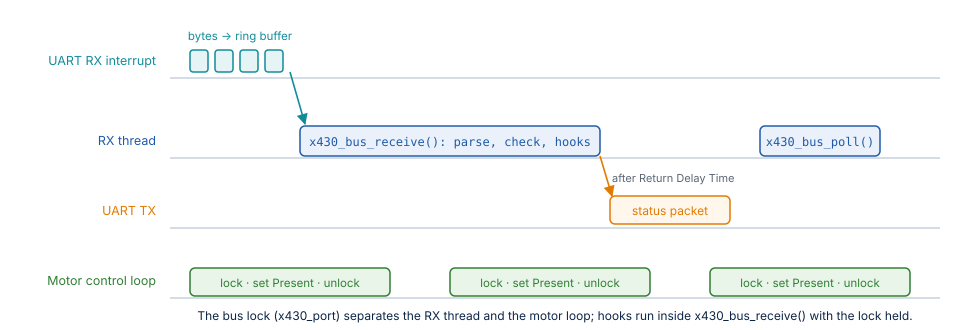
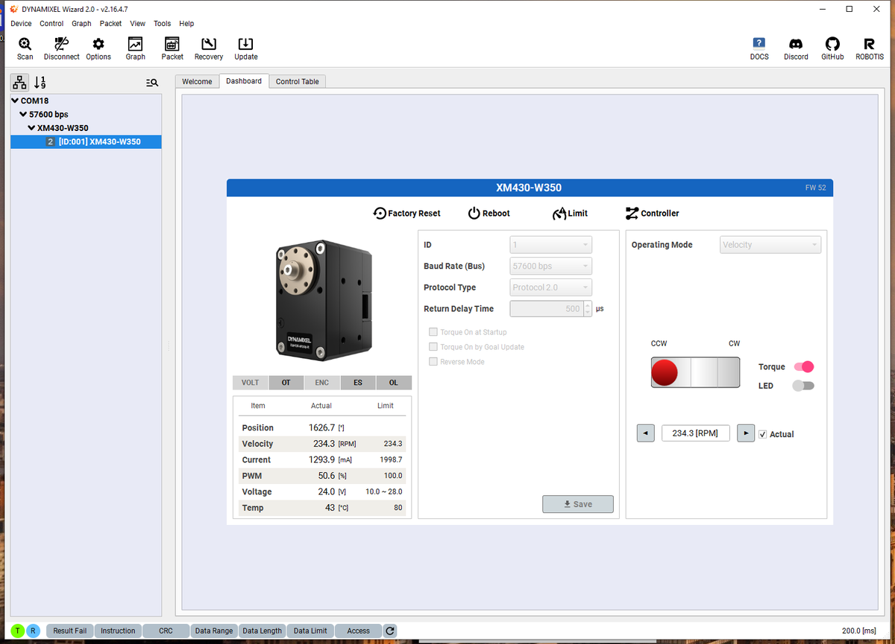
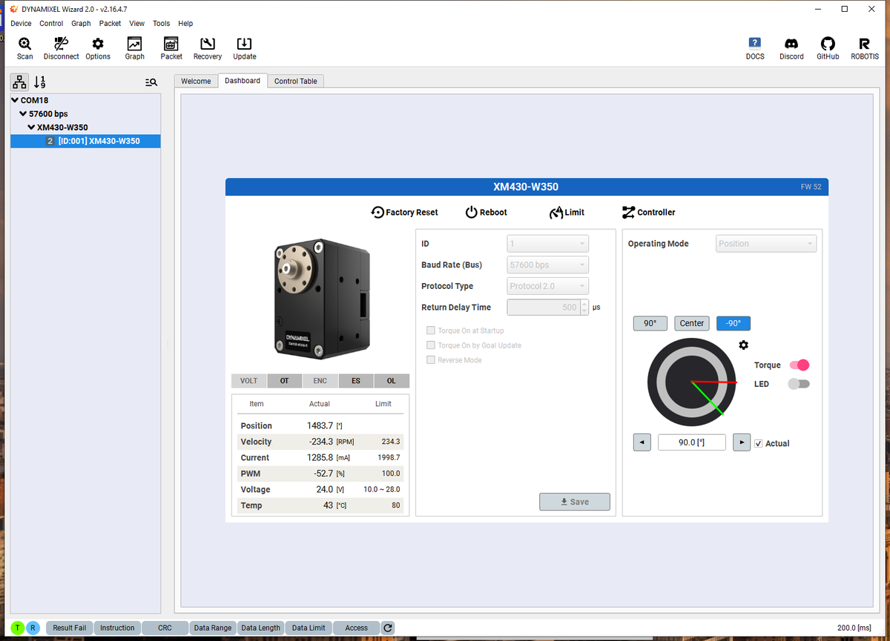
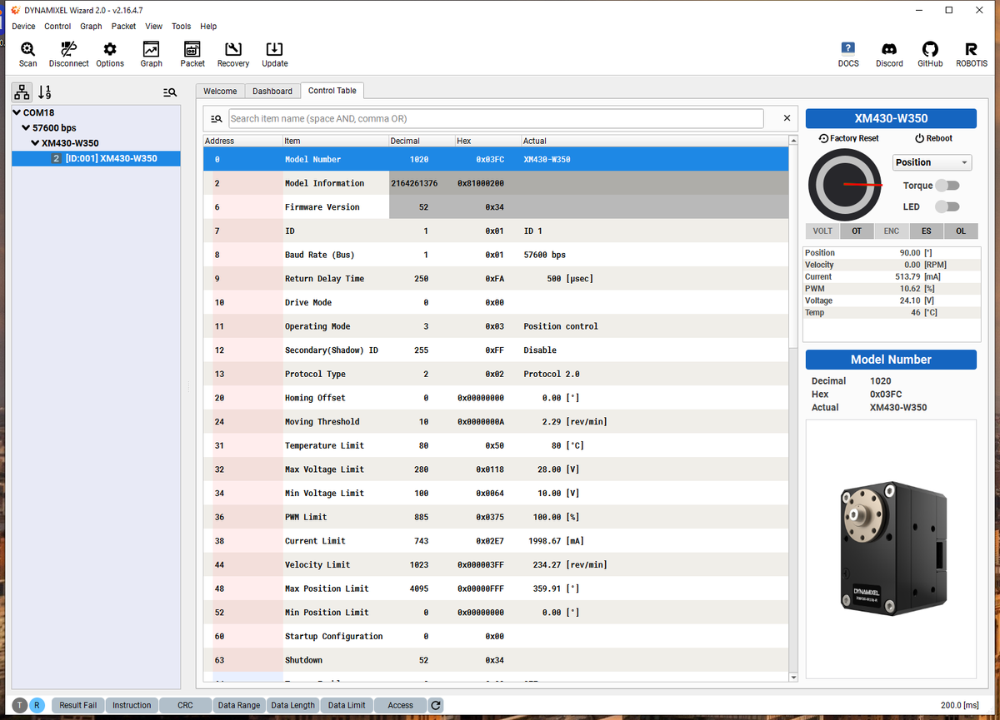
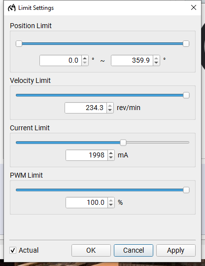

Integration Guide¶
The X430 emulator does not touch hardware. An integration has four parts:
- Input: the bytes received on the DYNAMIXEL line (TTL half duplex or RS-485), passed
to
x430_bus_receive()in any chunking. - Output: the byte writer of
struct x430_bus_config, which sends one complete status packet (and switches the direction of a half-duplex line). - The motor: the hooks of each device and the live register updates.
- Contexts and storage: the port (lock, millisecond clock, delay) and the persistent blocks.

Timing¶
| Item | Requirement |
|---|---|
x430_bus_receive() |
As soon as bytes arrive; a status packet is sent from inside the call |
| Return Delay Time (9) | Waited through x430_port::delay_us (default 250 × 2 µs = 500 µs) |
x430_bus_poll() |
Every 5–20 ms (Bus Watchdog unit 20 ms) |
| Live register updates | At the rate of the control loop, between x430_bus_lock() and x430_bus_unlock() |
| Interrupts | Never call a library function from an interrupt handler: the UART interrupt only stores bytes |
| Stack of the bus context | 1,796 B (768-byte packets, the default) or 772 B (256-byte packets) on Cortex-M4 -Os, plus the hooks (Configuration) |
Bare metal¶
static int uart_write(void* context, const uint8_t* data, size_t length)
{
(void)context;
return board_uart_write(data, length);
}
static uint32_t millis(void* context)
{
(void)context;
return board_millis();
}
static void delay_us(void* context, uint32_t us)
{
(void)context;
board_delay_us(us);
}
static const struct x430_port port = {
.context = NULL, .lock = NULL, .unlock = NULL, .millis = millis, .delay_us = delay_us};
void serve_forever(void)
{
for (;;)
{
uint8_t bytes[64];
const size_t count = board_uart_read(bytes, sizeof(bytes)); /* from the RX ring */
(void)x430_bus_receive(&bus, bytes, count);
if (board_tick_1ms())
{
(void)x430_device_set(&joint, X430_ADDR_PRESENT_POSITION, motor_position());
(void)x430_bus_poll(&bus);
}
}
}
bus and joint are set up as in Using the Library
with .port = &port. Without a lock everything runs in the main loop.
RTOS¶
UART ISR --bytes--> ring buffer --> RX thread: x430_bus_receive() (lock held inside)
`- hooks --commands--> queue --> motor thread
motor thread: x430_bus_lock(); x430_device_set(Present ...); x430_bus_unlock();
timer or RX thread: x430_bus_poll() every 5-20 ms
The lock must be recursive if a hook can lead to code that takes it again. Zephyr mutexes are recursive:
static void lock(void* context)
{
mutex_lock(context); /* Zephyr: k_mutex_lock(context, K_FOREVER) */
}
static void unlock(void* context)
{
mutex_unlock(context); /* Zephyr: k_mutex_unlock(context) */
}
static const struct x430_port rtos_port = {
.context = &bus_mutex, .lock = lock, .unlock = unlock, .millis = port_millis,
.delay_us = port_delay_us};
FreeRTOS: xSemaphoreTakeRecursive / xSemaphoreGiveRecursive, xTaskGetTickCount
converted to milliseconds. POSIX: a pthread_mutex_t of type PTHREAD_MUTEX_RECURSIVE
(see examples/host_sim/x430_host_sim.c).
Events¶
The event X430_EVENT_BAUD_RATE arrives after the status packet of the write that changed
Baud Rate (8), so the answer leaves at the old rate:
static uint8_t on_event(struct x430_device* device, enum x430_event event, void* user_data)
{
int32_t code = 0;
(void)user_data;
if ((event == X430_EVENT_BAUD_RATE) || (event == X430_EVENT_FACTORY_RESET))
{
(void)x430_device_get(device, X430_ADDR_BAUD_RATE, &code);
board_uart_set_baud((uint8_t)code); /* code 1 = 57600 bps, 3 = 1 Mbps */
}
else if ((event == X430_EVENT_BUS_WATCHDOG) || (event == X430_EVENT_TORQUE_SHUTDOWN))
{
motor_stop();
}
else
{
/* reboot, clear, backup restored */
}
return DXL2_ERR_NONE;
}
Persistent storage¶
The EEPROM area (76-byte block) and the backup (674-byte block) are opaque byte blocks with a header and a CRC (format); store them where your flash allows:
static int nvm_load(struct x430_device* device, enum x430_nvm_slot slot, uint8_t* data,
uint16_t size, void* user_data)
{
(void)device;
(void)user_data;
return flash_read((uint32_t)slot, data, size); /* 0, or negative without data */
}
static int nvm_store(struct x430_device* device, enum x430_nvm_slot slot, const uint8_t* data,
uint16_t size, void* user_data)
{
(void)device;
(void)user_data;
return flash_write((uint32_t)slot, data, size); /* 0, or negative: Result Fail */
}
nvm_store is called from the bus context after the change. On an MCU with one flash bank
an erase stalls the CPU: refuse the store (return a negative value, the host gets Result
Fail) while the power stage runs, or copy the block and write it from another thread.
Adding the library to a CMake build¶
set(X430_MODEL xm430_w350)
set(COMPILE_DEFINITIONS X430_MAX_DEVICES=2U) # options of x430_config.h
set(COMPILE_OPTIONS -Os) # flags of the library sources
include(path/to/DYNAMIXEL-X430-Control-Table-Emulator/x430.cmake)
target_link_libraries(app PRIVATE x430)
target_link_libraries(x430 PUBLIC zephyr_interface) # Zephyr applications only
With UNIT_TESTS=ON in the project, the unit tests of this library are built too
(x430_gtest) and run with the project's CTest (ctest -L x430); the x430 library
itself never contains them.
In a Zephyr module, take DXL2-C from a west project instead of FetchContent with
FETCHCONTENT_SOURCE_DIR_DXL2, pin it to the tag x430.cmake expects
(X430_DXL2_GIT_TAG), and put DXL2-C's cmake/ folder first on CMAKE_MODULE_PATH
(Zephyr has a version.cmake of its own).
Host tools¶
ROS 2 (dynamixel_hardware_interface)¶
The interface pings each ID, loads the model file by Model Number, writes Torque Enable and Operating Mode, programs Indirect Address blocks and reads them with Fast Sync Read (falling back to Sync Read). All of this is emulated. Points to check:
- The Model Number must exist in its
param/dxl_model/dynamixel.model. The XW430-T200 (1,280) is not listed there: useCONFIG_X430_MODEL_NUMBER_OVERRIDE=1270or add a model file. - Fast reads answer for the IDs of this bus only: keep all IDs of one hardware component on the same emulator bus.
- The Fast Sync Read answer must fit
DXL2_MAX_PACKET_SIZE:10 + devices × (bytes + 4).
DYNAMIXEL Wizard 2.0¶
The factory baud rate is 57,600 bps, as on an X430, so the default scan finds the device.
After the scan the Dashboard and the Control Table tab read the whole Control Table
(addresses 0–661) in one READ of 662 bytes, which the default DXL2_MAX_PACKET_SIZE of 768
allows; below that the Wizard shows TIME OUT (Packet size).
The screenshots below were taken with DYNAMIXEL Wizard 2.0 (v2.16.4.7) and a stepper joint firmware built on this library (an STM32G431 board with a 17HS19-2004S1 stepper motor at 24 V, emulating an XM430-W350, Model Information = firmware version, voltage limits raised with an application override):

Velocity mode at the Velocity Limit. Present Current and Present PWM are written by the firmware from its current measurement and duty cycle.

Position mode during a move: the sign of Present Velocity and Present PWM follows the direction.

Control Table: the EEPROM area (pink addresses) is locked while the torque is on, as on an XM430.

Limit Settings with the factory values of that firmware.
Without hardware: the host simulator¶
examples/host_sim/x430_host_sim.c serves simulated devices on a POSIX serial port or
pseudo-terminal (Linux, macOS, WSL):
cmake --preset "X430[Examples]" && cmake --build "build/X430[Examples]"
"build/X430[Examples]/examples/x430_host_sim" --pty --link /tmp/ttyDXL --ids 1,2,3
# point DynamixelSDK or ROS 2 at /tmp/ttyDXL
Bring-up checklist¶
- PING with DynamixelSDK or the Wizard at 57,600 bps: the Model Number and Firmware Version come back.
- READ the whole table (Wizard Control Table tab): no TIME OUT.
- WRITE Torque Enable 1 and 0: the write hook switches the motor; Goal Position takes Present Position.
- Move in Position mode: Present Position and Moving follow the motor.
- Write an EEPROM register (Return Delay Time) with the torque off, power-cycle: the value
survives (
nvm_store/nvm_load). - Set Bus Watchdog to 10 and stop the host: after 200 ms the motor stops and Bus Watchdog reads −1.
- Raise a hardware error with its Shutdown bit: the torque goes off, statuses carry the alert bit, REBOOT clears it.
- Change Baud Rate: the answer comes at the old rate, the next packet at the new one.